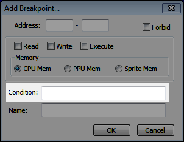
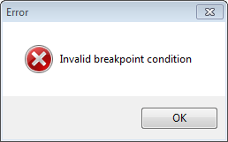

Содержание
В окне создания/редактирования брейкпоинта можно вводить, изменять и удалять дополнительные условия в поле ввода Condition. Эти условия помогают отсеять ненужные срабатывания брейкпоинта, или чтобы сделать брейкпоинт еще более точным (что в принципе одно и тоже).

Чтобы условие в поле ввода Condition было проверено Debugger'ом, вначале должно быть выполнено условие на адрес, на тип адреса и на тип брейкпоинта. Если хотя бы одно из них не выполняется, брейкпоинт не сработает в любом случае.
Если условие было введенно неправильно, то при попытке сохранить такой брейкпоинт вылезет окно с ошибкой.

В примерах используется оператор сравнения "==", означающий "равенство". Он часто применяется на практике.
Записываются заглавной латинской буквой - A, X и Y. Например, A == #F9.
Записываются заглавной латинской буквой - N, V, U, B, D, I, Z и C. Например, C == #00.
Поскольку у флага может быть лишь состояние 0 или 1, нужно сравнивать флаг с байтами #$00 или #$01.
Записываются с префиксом #, цифрами и латинскими буквами (строчными или заглавными). Формат записи - #xx. Лишний ноль слева можно опустить. Например, X == #1A.
При необходимости можно записывать 16-битные байты.
Записываются с префиксом $, цифрами и латинскими буквами (строчными или заглавными). Формат записи - $xxyy. Лишние нули слева можно опустить.
Условие на адрес означает условие на "байт в этом адресе". Например, Y == $03B7.
Можно ставить условия только на адреса NES Memory.
Условие на адрес выполняемой команды. Записывается заглавной латинской буквой P. Например, P == #8100.
Условие на младший байт адреса указателя стека. Записывается заглавной латинской буквой S. Например, S == #76.
Номер банка в Debugger'е, указанный слева от адреса команды, может отличаться от номера банка маппера.
Позволяет уточнить банк, в котором будет выполняться команда, вызывающее срабатывание брейкпоинта.
Записывается заглавной латинской буквой K. Например, K == #00.
Условие автоматически выставляется при добавлении Execute брейкпоинта двойным кликом по адресу слева от команды.
Позволяет уточнить банк для чтения/записи байта. Используется с Read и Write брейкпоинтами на диапазоне $8000-$FFFF.
Записывается заглавной латинской буквой T. Например, T == #01.
Условие автоматически выставляется при добавлении брейкпоинта через Hex Editor в NES Memory по адресам $8000-$FFFF.
Используется как удобная альтернатива выставления условия сразу на 3 регистра A, X и Y.
Эти 2 операнда условия не работают в старой версии эмулятора.
Для грубого поиска считываемых/записываемых байтов можно создать Execute брейкпоинт на диапазон $8000-$FFFF и добавить соответствующее условие.
Если команда способна вызывать срабатывание как Read, так и Write брейкпоинтов (вроде INC и DEC), для нее можно воспользоваться любым из этих операндов.
Условие для Read брейкпоинтов, позволяет уточнить в условии считываемый байт из указанного адреса.
Записывается заглавной латинской буквой R. Например, R == #4D.
Условие для Write брейкпоинтов, позволяет уточнить в условии записываемый байт в указанный адрес.
Записывается заглавной латинской буквой W. Например, W == #D4.